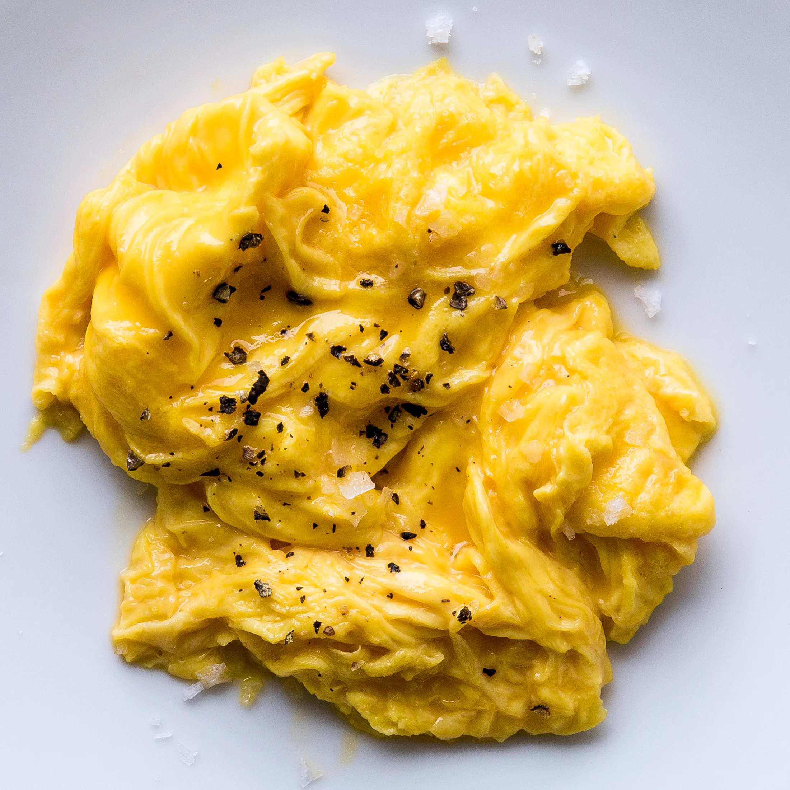

Scrambled Eggs

Description
The right way to scramble eggs. There is more to just mixing eggs and cooking! This will make a believer out of you.
Ingrediants
- 2 eggs
- 1 teaspoon mayonnaise or salad dressing
- 1 teaspoon water (Optional)
- 1 teaspoon margarine or butter
- 1 pinch of salt and pepper to taste
Steps
-
In a cup or small bowl, whisk together the eggs, mayonnaise and water using a fork. Melt margarine in a skillet over low
heat. Pour in the eggs, and stir constantly as they cook. Remove the eggs to a plate when they are set, but still moist.
Do not over cook. Never add salt or pepper until eggs are on plate, but these are also good without.